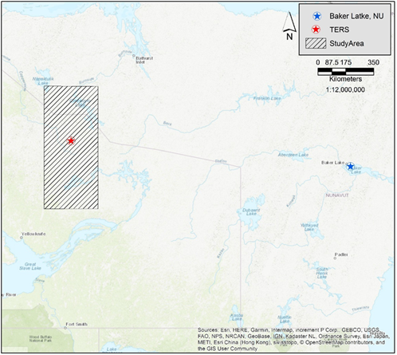
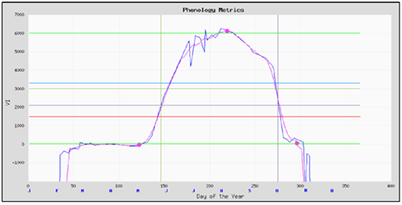

Introduction
Au cours des dernières décennies, les écosystèmes du bas-Arctique ont connu une hausse de la température moyenne, et cette tendance devrait se poursuivre dans un avenir rapproché. Les effets de cette hausse sur les écosystèmes du bas-Arctique sont vastes et se manifestent de plusieurs façons, notamment des saisons de feux de forêt plus longues et plus sévères, le dégel du pergélisol et des changements dans la végétation (Symon et al. 2005).
Le changement climatique devrait modifier l'aire de répartition de nombreuses communautés végétales en augmentant celle des espèces arbustives comme le saule (Salix spp.), le bouleau (Betula spp.) et l'aulne (Alnus spp.). Les espèces arbustives constituent souvent le couvert végétal dominant observé par télédétection, formant fréquemment des amas denses de végétation faciles à quantifier (Olthof et Fraser 2014).
Des expériences menées à Daring Lake, T.N.-O., ont testé les effets du réchauffement et de la fertilisation, où les arbustes décidus ont montré des taux de croissance accrus jusqu'à devenir le couvert dominant.
Dans cette étude, nous explorons comment la télédétection peut être utilisée pour catégoriser et quantifier l'« arbustification » observée dans le bas-Arctique canadien, en particulier dans les zones adjacentes à la limite forestière.
La Science : Télédétection et NDVI
La télédétection recueille des images pour dégager des tendances à grande échelle de l'occupation du sol. Par la photosynthèse, les plantes vertes vivantes absorbent le rayonnement solaire dans le spectre du rayonnement photosynthétiquement actif (PAR). Elles réfléchissent toutefois le rayonnement solaire dans le proche infrarouge (NIR) pour éviter la surchauffe.
Par conséquent, les plantes vertes vivantes apparaissent relativement claires dans le NIR et sombres dans le PAR. Ce contraste permet à des satellites comme Landsat de calculer l'indice de végétation par différence normalisée (NDVI), une mesure clé pour suivre la santé et la densité de la végétation dans le temps.
Zone d'Étude et Méthodes
Cette étude a porté sur une zone (40 000 km²) adjacente à la station de recherche sur l'écosystème de toundra de Daring Lake (TERS), située à 111°35′O 64°52′N. La TERS se trouve à environ 50 km au nord de la limite forestière.

Les données de température ont été obtenues auprès d'Environnement et Changement climatique Canada pour la station météorologique de Baker Lake, au Nunavut. Un jeu de données mondial sur l'indice de végétation et la phénologie a été obtenu gracieuseté de la NASA.

Le début et la fin de la saison de croissance sont définis comme cinq jours consécutifs de NDVI croissant ou décroissant, respectivement.
Résultats
L'analyse des données a révélé des tendances significatives sur la période de 28 ans (1981-2008). Voici l'ensemble de données complet utilisé pour l'analyse, suivi de représentations graphiques des tendances.
| Année | Temp. Moy. Baker Lake (°C) | Début de Saison | Fin de Saison |
|---|---|---|---|
| 1981 | -10,0 | 11 juin | 27 sept. |
| 2008 | -11,0 | 04 juin | 14 oct. |
Discussion
Les données météorologiques de Baker Lake, NU, ont montré une hausse moyenne de 0,07 °C par année durant la période étudiée (1981-2008), totalisant une hausse de deux degrés. Ce résultat était attendu, conforme à de nombreuses études publiées dans l'Arctic Climate Impact Assessment (2005). L'analyse statistique de la régression linéaire a montré une corrélation faible avec la droite de tendance ($R^2=0.18$, $p=0.023$). Cette corrélation faible s'explique probablement par des variations des phénomènes météorologiques locaux ainsi que par une période d'étude relativement courte.
La moyenne du début de la saison de croissance pour la zone d'étude a montré une forte tendance négative ($R^2=0.81$, $p < 0.001$). Sur les 28 années, la date de début de saison a avancé de sept jours (du 11 juin en 1981 au 4 juin en 2008).
Les données de fin de saison ont montré une forte tendance positive ($R^2=0.72$, $p < 0.001$), ce qui signifie que la saison se termine plus tard. Ces résultats concordent avec les études publiées par Xu et al. (2013).
L'effet cumulatif de ce changement observé dans les écosystèmes du bas-Arctique peut avoir des répercussions considérables sur divers cycles naturels (cycle du carbone, cycle de l'eau, effet d'albédo, épaisseur de neige). Les modèles de changement climatique nécessiteront des informations plus précises sur la structure et l'étendue de la végétation dans ce bas-Arctique en mutation (Martin et al. 2017).
Références Citées
- Didan, K. and A. Barreto. 2016. NASA measures vegetation index and phenology (VIP) phenology NDVI yearly global 0.05Deg CMG. NASA EOSDIS Land Processes DAAC.
- Symon, C., L. Arris, and B. Heal, editors. 2005. Arctic climate impact assessment. Cambridge University Press, New York, NY, USA.
- Xu L., et al. 2013. Temperature and vegetation seasonality diminishment over northern lands. Nature Climate Change 3:581-6